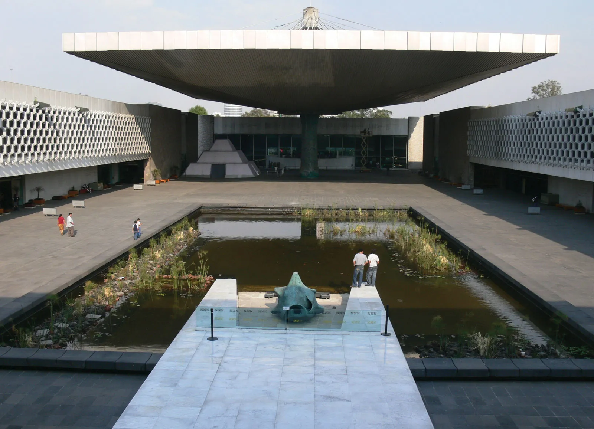
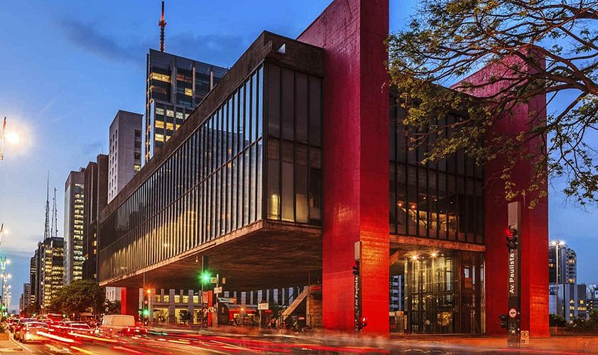
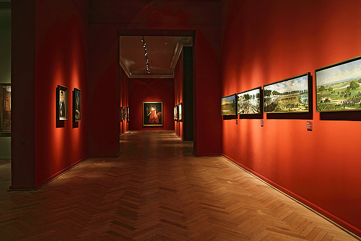
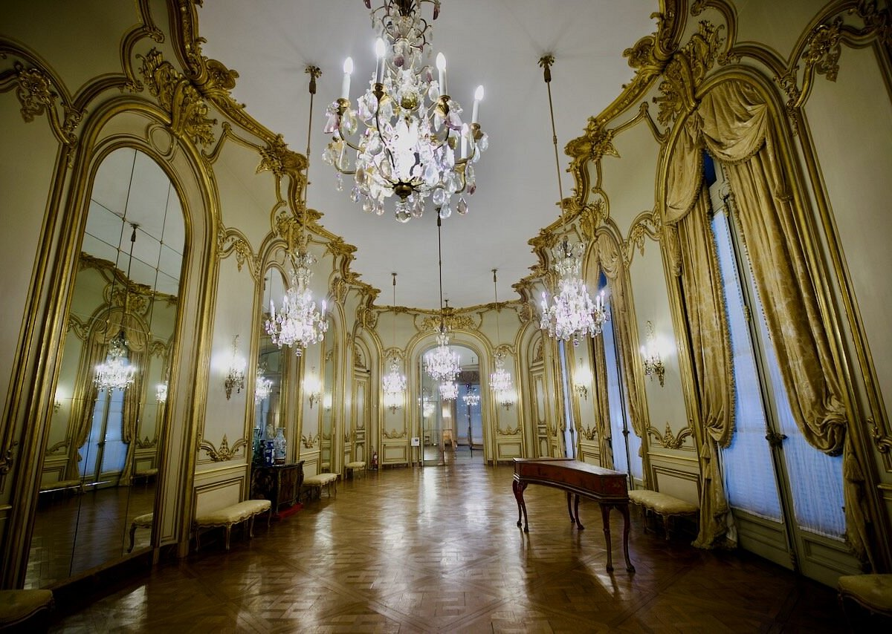
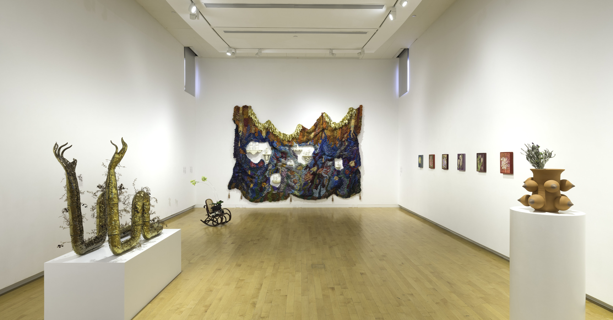

代表项目 Proyectos Destacados Featured Projects
代表性项目类型 Tipos de Proyectos Representativos Representative Project Types
以下为 NEXO 服务的主要项目类型。具体案例详情见旗舰项目页面。 A continuación se presentan los principales tipos de proyectos atendidos por NEXO. Para detalles de casos específicos, consulte nuestra página de Programas. Below are the main project types served by NEXO. See our Programs page for detailed case studies.

阿根廷国立美术博物馆MNBA ArgentinaNational Museum of Fine Arts, Argentina

墨西哥国家人类学博物馆MNA MéxicoNational Museum of Anthropology, Mexico

圣保罗艺术博物馆 MASPMASP São PauloSão Paulo Art Museum, MASP

意大利那不勒斯美术学院NABA ItaliaNABA, Milan

阿根廷装饰艺术博物馆MAD ArgentinaMuseum of Decorative Arts, Argentina

当代艺术画廊装置Instalación ContemporáneaContemporary Gallery Installation